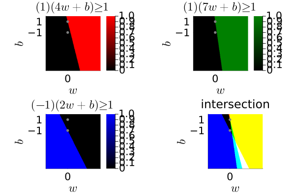
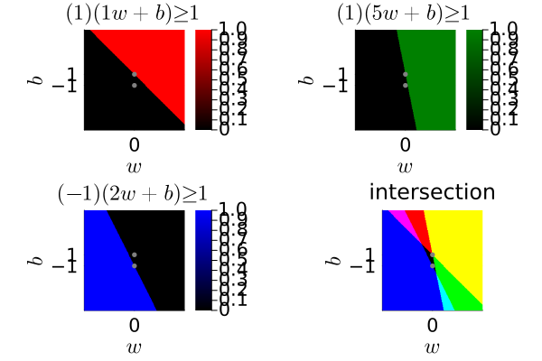

Illustrate hard margin constraint sets
Illustrate the constraint sets associated with the hard-margin linear classifier in Julia.
This page comes from a single Julia file: hard-margin.jl.
You can access the source code for such Julia documentation using the 'Edit on GitHub' link in the top right. You can view the corresponding notebook in nbviewer here: hard-margin.ipynb, or open it in binder here: hard-margin.ipynb.
Setup
Add the Julia packages used in this demo. Change false to true in the following code block if you are using any of the following packages for the first time.
if false
import Pkg
Pkg.add([
"InteractiveUtils"
"LaTeXStrings"
"MIRTjim"
"Plots"
])
endTell Julia to use the following packages. Run Pkg.add() in the preceding code block first, if needed.
using InteractiveUtils: versioninfo
using LaTeXStrings: @L_str, latexstring
using MIRTjim: jim, prompt
using Plots: default, gui, savefig, RGB
using Plots: plot, plot!, scatter!
default(); default(markersize=3, markerstrokecolor=:auto, label="",
tickfontsize=14, labelfontsize=16, legendfontsize=16, titlefontsize=16)The following line is helpful when running this file as a script; this way it will prompt user to hit a key after each figure is displayed.
isinteractive() ? jim(:prompt, true) : prompt(:draw);Hard-margin problem statement
Consider supervised learning of a binary classifier with training data $(x_i, y_i)$ where $y_i = ±1$ and $x_i ∈ ℝᵈ.$ the hard-margin classifier involves a constrained optimization problem involving the constraint set
y_i (w^T x_i + b) ≥ 1,\ i=1,…, n.Each such constraint is a half-plane in $(w,b)$.
We illustrate such half-planes for the case $d = 1.$
Linearly separable data
function make_plot( ;
x = vec([4 7 2]),
y = vec([+1 +1 -1]),
xlim = (-4, 6),
ylim = (-8, 2),
)
# feasible set for each of the 3 training data points
ws = range(xlim..., 201)
bs = range(ylim..., 203)
valid = [y[i] * (w * x[i] + b) ≥ 1 for i in 1:3, w in ws, b in bs]
args = (;
aspect_ratio = 1,
xaxis = (L"w", xlim, 0:4:0),
yaxis = (L"b", ylim, [-99,-1,1]),
colorbar_ticks = [0,1],
)
colors = (:red, :green, :blue)
pp = map(1:3) do i
p = jim(ws, bs, valid[i, :, :];
title = latexstring("($(y[i])) ($(x[i])w + b) ≥ 1"),
color = [:black, colors[i]],
args...,
)
scatter!(p, [0], [+1]; color = :grey)
scatter!(p, [0], [-1]; color = :grey)
p
end
# Merge as RGB so that white is the feasible intersection
tmp = map(splat(RGB), eachslice(valid, dims=(2,3)))
p0 = jim(ws, bs, tmp;
title = "intersection",
xy_warn = false,
args...,
)
scatter!(p0, [0], [+1]; color = :grey)
scatter!(p0, [0], [-1]; color = :grey)
return jim(pp..., p0)
end
p1 = make_plot()
prompt()
# savefig(p1, "hard-feasible.pdf")Infeasible case
p2 = make_plot(; x = vec([1 5 2]), xlim = (-9,9), ylim=(-9,9))
prompt()
# savefig(p2, "hard-infeasible.pdf")This page was generated using Literate.jl.